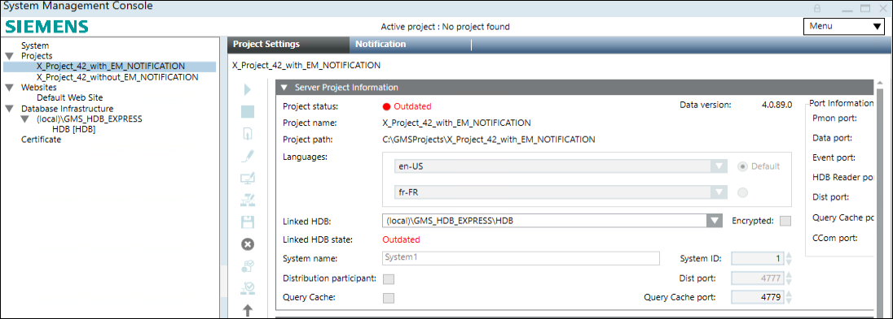

Upgrading V4.2/V5.0 Projects with Notification Database to V5.x and Later

From V5.1 and onwards, project and notification database works independent. You need to upgrade V4.2/V5.0 Projects with Notification Database to V5.x and later.
- Project is available and outdated.
- To upgrade the outdated project, in the Project Settings toolbar, click Upgrade
 .
. - The project is upgraded and the Notification Database is added under the Database Infrastructure in SMC.
- Select the newly added Notification database and click Upgrade .
- The Notification database is upgraded.
NOTE: To install a new language, you need to install both platform and EM language packs using Update Desigo CC application. For more details, refer Install or Update a Language Pack in Additional Installer Procedures.